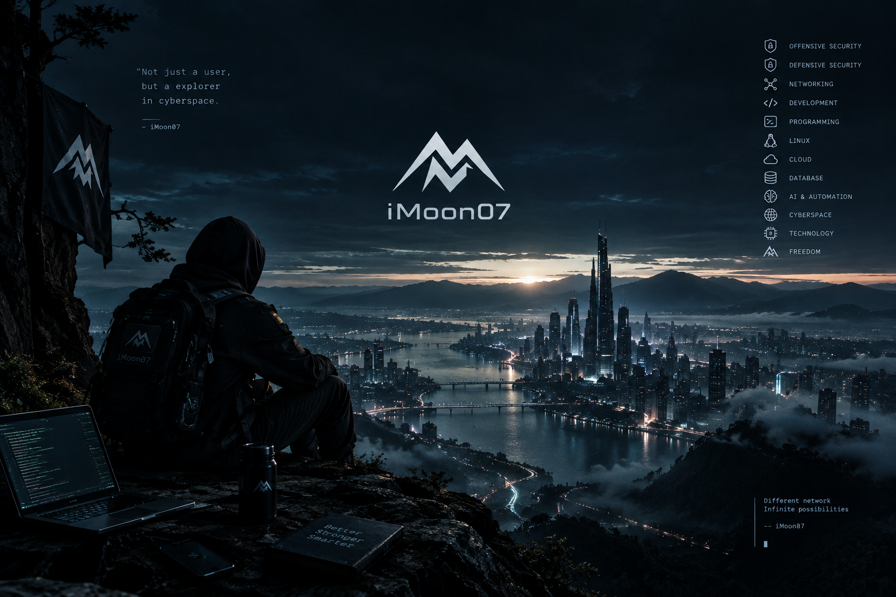
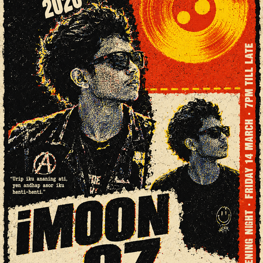
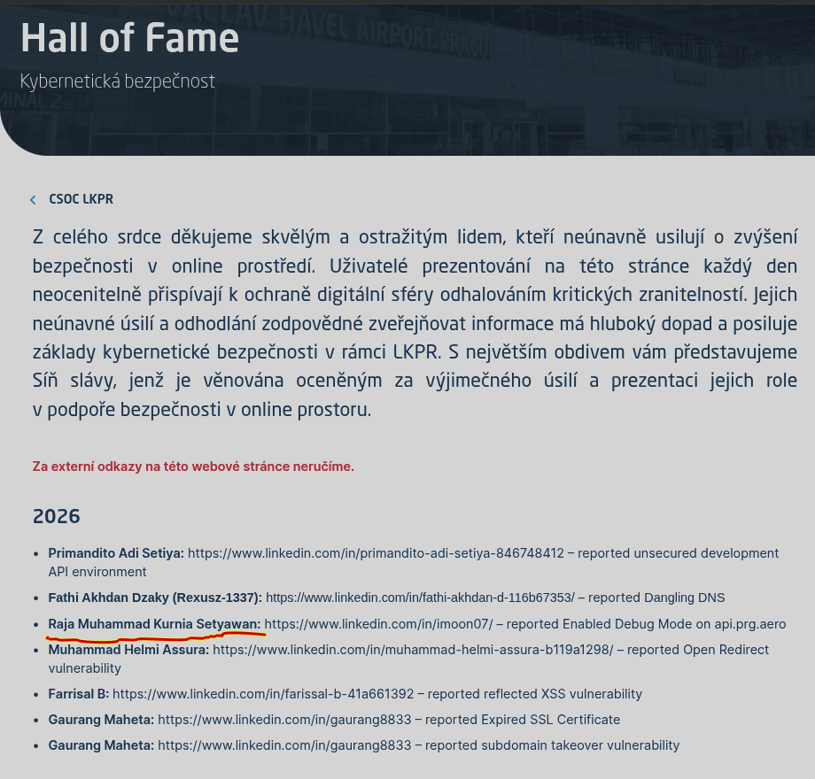
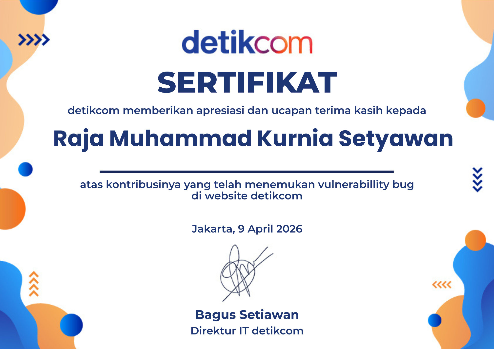
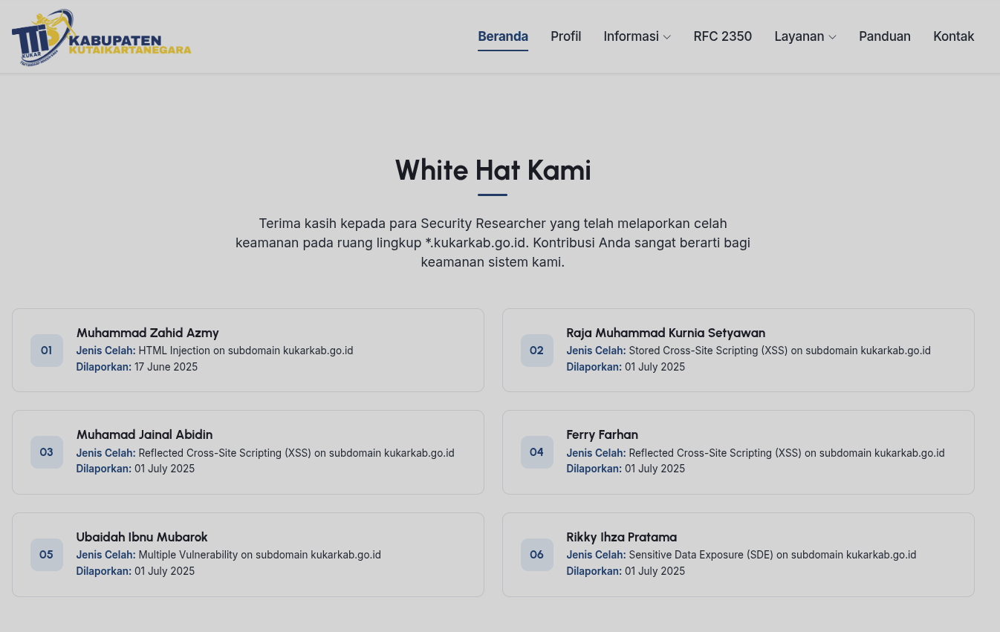

Exploring cyberspace.
Alhamdulillah. Thanks for coming.

iMoon07
Security / Indonesia
اَلسَّلَامُ عَلَيْكُمْ وَرَحْمَةُ اللهِ وَبَرَكَاتُهُ
Hi, I’m Kurnia.
Raja Muhammad Kurnia Setyawan (@iMoon07) is a freelance penetration tester based in Bintan Islands, Indonesia, with an interest in cybersecurity and system security.
- Focus Areas
- Web, Mobile & API Security, Linux Security, Penetration Testing, and Technical Writing.
- Current Activities
-
- Vulnerability Assessment & Penetration Testing (VAPT)
- Linux Attack & Post-Exploitation
- Linux Investigation & Digital Forensics
- Cybersecurity Labs, Experiments & Technical Writing
Experience.
& recognition.
PT. Merdeka Siber Teknologi
Joined Merdeka Siber Batch 11 in 2024 and completed a 3-month training program focused on learning and practicing penetration testing. After completing the training, continued working on freelance, project-based VAPT engagements starting in January 2025, assessing web applications, APIs, and mobile applications for clients across different industries using black-box and grey-box testing methodologies.
National Tourism
Jul 2025 · Web · Greybox
Heavy Equipment & Mining
Oct 2025 · Web & Mobile · Greybox
Private — LPRO
Worked on VAPT projects involving web applications, APIs, and Android applications. Identified security issues and documented findings to support remediation.
Banking & Financial Services
Dec 2025–Jun 2026 · Web & API · Blackbox
Real Estate & Property
Oct 2025 · Web & Mobile · Blackbox
Donation & Zakat Platform
Nov 2025 · Web · Greybox
PT Teknologi Server Indonesia (Xcode)
Junior Cybersecurity Analyst · Internship
Sep–Dec 2025 · CyberSentinel Bootcamp — Batch 2
Joined CyberSentinel Bootcamp Batch 2 through a free 6-month training program from March to August 2025, followed by a 3-month internship at Xcode. Gained hands-on experience in SOC L1–L2 monitoring, security alert investigation, and reporting. Also practiced internal black-box penetration testing, CTF challenges, and Bash scripting, using Proxmox and Wazuh to understand security monitoring and operations.
Vulnerability Disclosure
& Recognition
2025 — 2026
Independent vulnerability research and responsible disclosure across web, mobile, and API applications for public- and private-sector organizations.
Dinas Komunikasi dan Informatika Kota Bengkulu
Security Researcher Recognition · Oct 2026
Recognized for identifying and responsibly reporting potential security vulnerabilities in government web infrastructure and information systems.
Signatory: Dr. Nurlia Dewi, S.H., M.H. — Chairperson, Bengkulu City Government CSIRT. Date: Oct 15, 2026.
Open certificate 01 (PDF)
Open certificate 02 (PDF)
Official publication
Václav Havel Airport Prague
Hall of Fame · May 2026
Featured in the official Hall of Fame for independent vulnerability research and responsible disclosure. Acknowledged by Prague Airport's CSOC LKPR.

detikcom
Cybersecurity Vulnerability Disclosure · Apr 2026
Recognized for identifying and responsibly reporting potential security vulnerabilities.
Signatory: Bagus Setiawan — IT Director, detikcom. Date: Apr 9, 2026.

Pemerintah Kota Magelang (Diskominsta)
Cybersecurity Vulnerability Disclosure · Apr 2026
Recognized for reporting a security vulnerability in a government website.
Signatory: Muchamad Abdul Azis, S.H. Ref: 500.12.10.3/218/320.
Diskominfo Provinsi Jakarta
Cybersecurity Vulnerability Disclosure · Feb 2026
Recognized for independent vulnerability research and responsible disclosure supporting application security and digital infrastructure.
Signatory: Dr. Andrie Yuswanto, S.Pd., M.T. Ref: 26/BUG/BSSA/II/2026. Date: Feb 28, 2026.
CSIRT Kukar (Kutai Kartanegara)
White Hat Recognition · Jul 2025
Featured on the official White Hat page for responsibly reporting vulnerabilities within the *.kukarkab.go.id scope.
Reported: July 1, 2025.

Open HOF image
Open certificate (PDF)
Official White Hat page
Komisi Penyiaran Indonesia (KPI Pusat)
Appreciation for Application Security Contribution · Jun 2025
Recognized for reporting security vulnerabilities in public service applications managed by KPI Pusat.
Signatory: Umri — Secretary, KPI. Ref: B-482/SETKPI.31/HM.02.11/06/2025. Date: Jun 11, 2025.
Open certificate — KPI Pusat (PDF)
Open certificate — KPI (PDF)
PT Transportasi Jakarta (Transjakarta)
Appreciation for Cybersecurity Vulnerability Disclosure · May 2025
Recognized for identifying and responsibly reporting potential security vulnerabilities in information systems and digital services.
Signatory: Maharaja Girsang — Head of IT Systems Division. Ref: TJB22052025066.
Pemerintah Kota Pasuruan (PASTA TTIS)
Vulnerability Disclosure Recognition · Mar 2025
Recognized for contributing to cybersecurity through independent vulnerability research and responsible disclosure.
Signatory: Imam Subekti, S.Sos., M.M. — Chairperson of PASTA-TTIS.
Speak.
& share.
Codelines — Universitas Negeri Semarang
Speaker – Cyber Security Division
DevXperience 2025 · Nov 2025 · Science and Technology
Attack–defend simulation with Wazuh & SOC learning.
Special thanks to Universitas Negeri Semarang (UNNES) and Codelines UNNES IT Association.
Coding Ceria
Guest Speaker — Cybersecurity Sharing Session
Aug 2025 – Jul 2026 · Science and Technology
Hands-on Wazuh, Linux infrastructure & security labs.
Special thanks to Mr. Wahyu Nurhidayat, Mr. Taro Lay, and all active members of Coding Ceria for the platform and opportunity.
Coding Ceria — Setup LAMP, phpMyAdmin & Cloudflare Tunnel
Coding Ceria — ModSecurity & OWASP CRS Rules
Cyber Security Discussion — Wazuh 4.14.2, Netdata & Cloudflare Tunnel
Cyber Security Discussion — OpenBSD, Oracle & MariaDB Multi-Tier
Debug Life Indonesia
Guest Speaker · Apr 2026
Windows brute-force activity, logs & Wazuh detection.
License.
Terms of use.
Source Code
MIT License
The original source code of this website, including HTML, CSS, and JavaScript, is licensed under the MIT License.
You are free to use, modify, and distribute the code, provided that the original copyright and license notices are included.
Articles & Tutorials
CC BY-NC-SA 4.0
Articles, tutorials, and educational materials published on this website are licensed under CC BY-NC-SA 4.0.
You may share and adapt the content for non-commercial purposes, provided that you give appropriate credit, link to the license, indicate changes, and distribute adaptations under the same license.
Third-Party Materials
Third-party code, libraries, images, and other materials remain subject to their respective licenses and terms. Their inclusion on this website does not mean they are covered by the licenses listed above.
01 / 04
Documentation
References.
IT · OT · Infra · Dev · Security.
Curated official docs, guides, standards, and developer references. Modular markdown modules rendered with the site reader foundation.
Standards & Core ProtocolsRFC, IETF, IANA, W3C, WHATWG, core web/Internet specs.
Low-Level, Systems & ToolchainKernel, libc, compilers, ABIs, debug, architecture manuals.
Detection & Security OpsWAF, IDS/IPS, SIEM/XDR, SOAR, detection, telemetry.
OT / ICS / IndustrialIEC 62443, NIST 800-82r3, CISA ICS, ATT&CK for ICS, protocols.